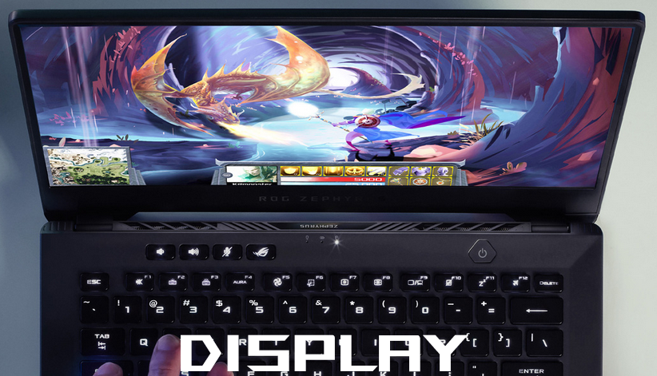

Το Zephyrus G14 αλλάζει το παιχνίδι για τη φορητότητα συσκευάζοντας πρωτοφανή ισχύ σε
ένα σώμα 14 ιντσών βάρους μόλις 1,76 κιλών.
Συνεργαστήκαμε με την AMD για να δημιουργήσουμε ειδικές εκδόσεις των cpu Ryzen™ 7
5800HS με χαμηλότερη κατανάλωση ενέργειας και θερμική απόδοση που επιτρέπουν ανώτερη
απόδοση για εξαιρετικά λεπτούς φορητούς υπολογιστές.
Η πρωτοποριακή τεχνολογία επεξεργασίας 7nm τοποθετεί έως και 8 πυρήνες και 16 threads σε
ένα μόνο τσιπ, επιτρέποντας στο G14 να αντεπεξέλθει σε μεγάλους φόρτους εργασίας.
Οι φορητοί υπολογιστές παιχνιδιών συνήθως αγωνίζονται να παραμείνουν ζωντανοί χωρίς ένα
τεράστιο τούβλο ισχύος,
αλλά η ενεργειακά αποδοτική CPU AMD Ryzen™ 7 5800HS του Zephyrus G14 σάς
επιτρέπει να ολοκληρώσετε την εργασία σας, να παρακολουθήσετε βίντεο και να παραμείνετε
παραγωγικοί χωρίς το βάρος.
Το USB Power Delivery σάς δίνει την ευελιξία να φορτίζετε την μπαταρία με
φορητά τροφοδοτικά και προσαρμογείς τύπου C ή να αναζωογονείτε γρήγορα συμβατά smartphone και
άλλες συσκευές.
Πείτε αντίο στη μάχη για τις πρίζες σε πολυσύχναστα καφέ και ζήστε τη ζωή χωρίς
περιορισμούς.

Επιλέξτε την οθόνη που ταιριάζει καλύτερα στον τρόπο ζωής σας. Οι μανιώδεις δημιουργοί θα
απολαύσουν τη λεπτομέρεια υψηλής ανάλυσης που είναι ορατή στη WQHD οθόνη, ενώ
οι λάτρεις των esports θα δουν πιο ομαλό παιχνίδι στην εξαιρετικά γρήγορη επιλογή
120Hz.
Ο προσαρμοστικός συγχρονισμός συγχρονίζει τον ρυθμό ανανέωσης της οθόνης με τον ρυθμό καρέ της
GPU για να εξαλείψει το σπάσιμο και να κάνει το παιχνίδι πιο ομαλό. Η επικύρωση
Pantone διασφαλίζει ότι τα χρώματα είναι ακριβή στο 100% του φάσματος
sRGB για έργα επαγγελματικού επιπέδου.
Τα εξαιρετικά στενά πλαίσια γύρω από την οθόνη σχεδόν ξεθωριάζουν στο παρασκήνιο, διατηρώντας
σας πλήρως απορροφημένους σε ό,τι υπάρχει στην οθόνη.
Το Zephyrus G14 έρχεται με ένα ασυμβίβαστο πληκτρολόγιο που ταιριάζει με λειτουργικότητα πλήρους
μεγέθους σε ένα πολύ μικρότερο μηχάνημα. Είναι ο πρώτος φορητός υπολογιστής ROG
που διαθέτει σύνδεση δακτυλικών αποτυπωμάτων στο κουμπί λειτουργίας,
καθιστώντας το ξύπνημα του φορητού υπολογιστή τόσο απλό όσο το ξεκλείδωμα του τηλεφώνου σας.
Η διάταξη εμπνευσμένη από την επιφάνεια εργασίας σάς κάνει να αισθάνεστε σαν στο σπίτι
σας με ειδικά πλήκτρα πρόσβασης που καθιστούν εύκολα προσβάσιμη την ένταση ήχου, τη σίγαση
μικροφώνου και το λογισμικό ROG Armoury Crate.
Η τεχνολογία overstroke ενεργοποιείται υψηλότερα σε κάθε πάτημα πλήκτρου για
ταχύτερη απόκριση και η σχεδίαση ErgoLift ανυψώνει το πληκτρολόγιο υπό
γωνία για να κάνει την πληκτρολόγηση πιο άνετη από ποτέ.
Εξοπλισμένο με το πιο πρόσφατο Intel® Wi-Fi 6 με Gig+ (802.11ax), μπορείτε να
παίζετε αξιόπιστα σε ταχύτητες LAN όπου υπάρχουν διαθέσιμες συμβατές συνδέσεις.
Το Wi-Fi 6 (Gig+) ενισχύει την ταχύτητα και την αποτελεσματικότητα του δικτύου,
παρέχοντας καλύτερη σύνδεση για πολυσύχναστους χώρους, όπως καφετέριες και βιβλιοθήκες.
Μειώνει επίσης τον λανθάνοντα χρόνο, πράγμα που σημαίνει λιγότερη
καθυστέρηση για δραστηριότητες ευαίσθητες στο δίκτυο, όπως τα διαδικτυακά παιχνίδια.
Η απελευθέρωση της κορυφαίας απόδοσης των εξαρτημάτων υψηλών προδιαγραφών είναι
ιδιαίτερα δύσκολη σε εξαιρετικά λεπτούς φορητούς υπολογιστές.
Απαιτούνται καινοτόμες λύσεις για τη διασφάλιση αξιόπιστης και σταθερής απόδοσης, οπότε
η φιλοσοφία Intelligent Cooling της ROG συνδυάζει τα σωστά χαρακτηριστικά και
τις ρυθμίσεις του συστήματος για να εξασφαλίσει την καλύτερη εμπειρία ανεξάρτητα από το τι
κάνετε.
Στο Zephyrus G14, η αυτοκαθαριζόμενη ψύξη αποτρέπει τη συσσώρευση σκόνης από το να
θέσει σε κίνδυνο τη μακροπρόθεσμη απόδοση, ενώ οι δύο ανεμιστήρες n-Blade περιστρέφουν 81
λεπίδες ο καθένας για να δημιουργήσουν εντυπωσιακή ροή αέρα μέσα στο λεπτό πλαίσιο.
Το λογισμικό ROG Armoury Crate εναλλάσσεται απρόσκοπτα μεταξύ των τρόπων
λειτουργίας για τη βελτιστοποίηση της απόδοσης και της ακουστικής για την εργασία.
Μια μεγάλη ποικιλία θυρών καθιστά το G14 ιδιαίτερα ευέλικτο. Χρησιμοποιήστε μια δεύτερη οθόνη
για να εκτελείτε πολλές εργασίες ταυτόχρονα πιο αποτελεσματικά μέσω της θύρας USB-C
με displayport 1.4.
Παρακολουθήστε ταινίες 4K UHD στη μεγάλη οθόνη ή συνδέστε εύκολα έναν βιντεοπροβολέα με
HDMI 2.0b. Συνδέστε το ποντίκι, το gamepad, το tablet σχεδίασης και
άλλα περιφερειακά για να παίξετε ή να είστε δημιουργικοί οπουδήποτε.
Δεν υπάρχει ανάγκη για dongles με ενσωματωμένη υποδοχή ακουστικών 3,5 mm.
 code: 180008 4.5/5
code: 180008 4.5/5